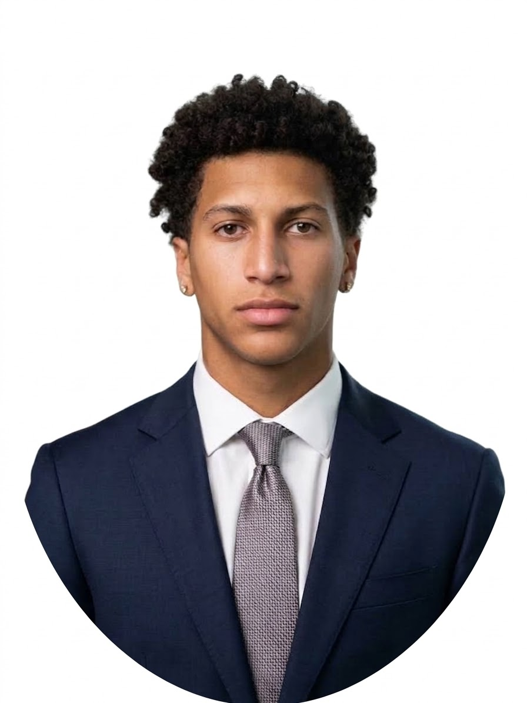
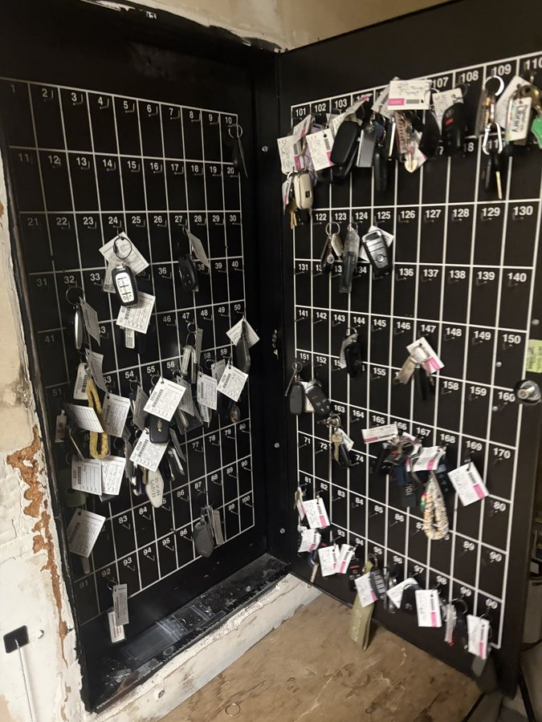
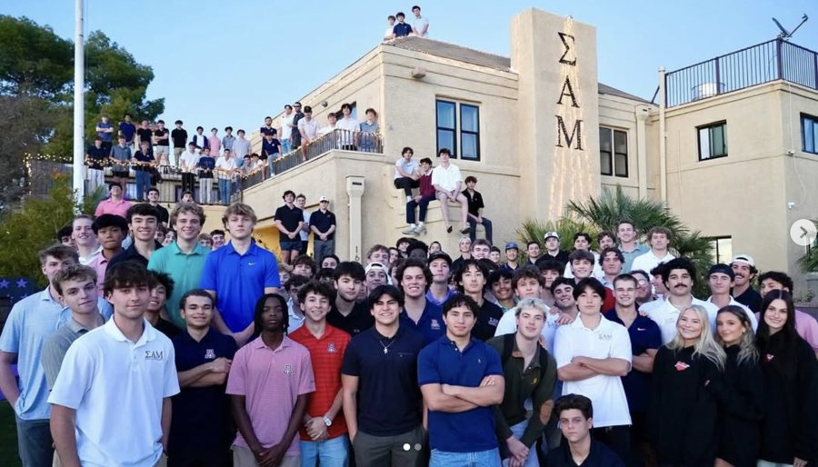
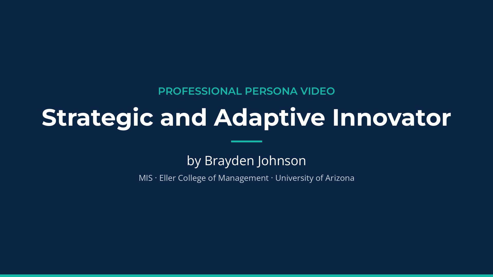
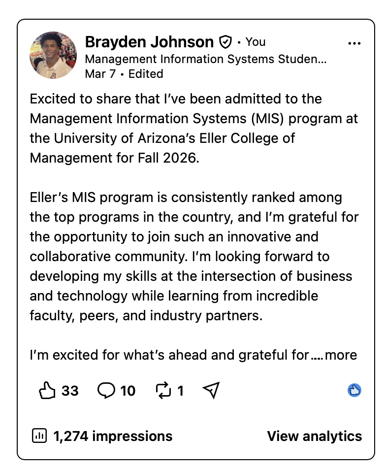

Professional persona video
- Context
- Step 4 assignment. I made it entirely on my own.
- Claims
- I can present a professional story on camera and produce video independently.
- Reasoning
- It is my main evidence for communication style and presence.
Aspiring technology consultant · MIS, University of Arizona · Eller, Fall 2026
I like taking messy problems and turning them into a clear plan, and I change how I talk to fit the room. Next up: studying abroad in Barcelona, then a summer 2027 tech consulting internship.

About
I am an MIS student at the University of Arizona, admitted to Eller for Fall 2026. My jobs in hospitality and retail taught me to adapt quickly and stay calm under pressure.
My main growth area is sharing ideas earlier in team work. That is the habit I am building now.
Recent experience

Guest service and vehicle handling at high-volume Tucson casino properties.

Coordinate 8–12 events per semester for 120+ members, and grew participation by 20%.
On-time routes and high customer satisfaction.
Customer fittings and seasonal merchandising.
Resume
Brayden Johnson
Tucson, AZ · LinkedIn profile
Education
Bachelor of Science in Business Administration · Pre-Business (MIS) · GPA 2.9
Experience
Skills
Microsoft Excel, Google Workspace, Customer Service, Time Management, Team Collaboration
Activities and interests
Member, Sigma Alpha Mu Fraternity. Interests include data analytics, business information systems, e-commerce operations, sports analytics, technology, and traveling.
Step 4
This is my persona video, about two and a half minutes long. I made it entirely on my own.

Opens in a new tab. [Thumbnail or embed to be added if the host allows it.]
Professional evolution analysis
Peers see a prepared, steady teammate who is more proactive than I rate myself. Each section below compares my self-view with peer data.
Proactivity −2.0, reactivity 0.0. Team role: Innovation. Words I chose: Calm, Driven, Outgoing, Hard-Working, Problem-Solver, Risk-Taker, Experimental.
Proactivity 3.0, reactivity 0.5, from eight ratings. Words peers chose: well-rounded, empathetic, caring, growth-oriented, idea-generator, leader-like.
Self-Perception Inventory: my own rating of proactivity and reactivity, plus the adjectives I chose to describe myself.
Professional Reputation Survey: ratings from eight peers, averaged into one composite.
Peer review rounds: three rounds from the same team, compared item by item.
Charisma Diagnostic: warmth 5.91 and confidence 6.36, which places me in the Charismatic Zone.
Others see more drive in me than I see in myself, and I am learning to show it sooner.
Evidence
My Self-Perception Inventory places me at a proactivity score of −2.0 and a reactivity score of 0.0, which reads as Amiable/Analytical. My eight peers place me at a composite of 3.0 proactivity and 0.5 reactivity, which reads as Expressive.
Reasoning and next steps
Peers read my careful preparation as initiative. My plan is to lead with visible work and share a draft idea early in each meeting.
After a dip in round two, I rebounded by acting on peer feedback.
Evidence
Three peer review rounds from the same team show a dip in Round 2 and a clear rebound in Round 3. Quality and effort moved the most.
"He practices, asks for help, and tries his best, which is a great improvement from where we all started." (Peer comment)
Reasoning and next steps
Quality and effort rose the most between Rounds 2 and 3. Holding others accountable stayed flat, and I will name that gap directly in interviews.
My peers see these three things in how I work, and each one has a next step I am already working on.
I treat guests, clients, and teammates with care. Peers rate my positive team environment at 86 to 89 out of 100, and one called me a pleasure to work with.
I adjust my approach to each person and situation. A peer called me a great adaptable team member, and I rebounded after acting on feedback in Round 3.
I share ideas before the plan is set, not after. This is where peers want more from me, and it is my main focus next.
Reasoning
Consulting means new clients and new teams on every project. Good consultants care about the client, adjust to its situation, and speak up early with a point of view. Those three things are what I am working on, and my peer data shows I am building them.
Conclusion and next steps
Key takeaways: I see myself as more reserved than peers do, I grow fastest when I act on feedback, and I am building the habit of sharing ideas early.
Looking ahead
In the spring I will study in Barcelona to deepen my studies and learn how work and business differ across cultures.
After that, I am aiming for a summer 2027 tech consulting internship, where I can apply what I learn with client teams.
Portfolio

Contact
Connect with me on LinkedIn, by email, or by phone.